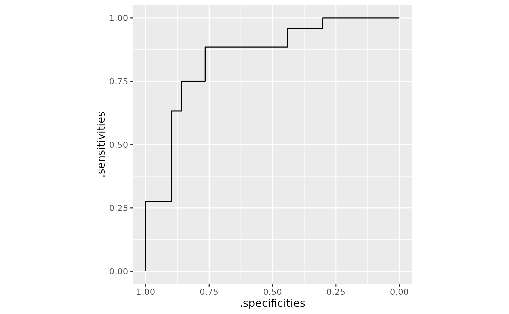

Compute sensitivity and specificity scores from (weighted) observed data
Source:R/roc.R
compute_sens_spec_from_ecdf.RdpROC::roc() does not support observation-weights when computing ROC curves.
This function fills that gap.
Usage
compute_sens_spec_from_ecdf(
data,
response,
predictor,
weights = NULL,
direction = NULL,
levels = NULL
)Arguments
- data
a dataframe containing responses (groupings) and predictor variable
- response
a bare column name with the group status (control vs. cases). If the response has more than two groups, the first element of
levelsis the control group and the second element oflevelsis the case group.- predictor
a bare column name with the predictor to use for classification
- weights
a bare column name for the observation weights. If
weightsis set toNULLor not provided, all values receive equal weight and conventional sensitivity and specificity scores are returned.- direction
directionfor computing case status.pROC::roc()'sdirectionconventions are supported:"<"(i.e.,control < case) and">"(control > case), or"auto"to have pROC guess the direction (if applicable). Alternatively, more verbose directions are supported:"case-low"or"control-high"if a low score predicts case status (case <= threshold < control, analogous to pROC's">") and"case-high"or"control-low"if a high score predicts case status (control < threshold <= case, analogous to pROC's"<"). These directions are translated into the pROC conventions.- levels
two-element vector
c(control, case)wherecontrolis the value ofresponsefor the control group andcaseis the value ofresponsefor the case group. The ordering matters: The first element of the vector names the control group.
Value
A dataframe of stepwise empirical ROC coordinates computed from
(optionally weighted) data. The output includes columns for the predictor
variable, .sensitivities, .specificities, .auc, .comparison,
.n_controls, .n_cases, .w_controls, .w_cases, .comparison,
.direction, .response, .controls, and .cases. n_ columns contain
the number of observations for that predictor value and w_ contain the
total weight of the observations for that predictor value.
Details
The .sensitivities and .specificities columns are calculated directly
from the (weighted) ECDFs of the controls and cases, so no call to
pROC::roc() is made.
.auc is calculated using trapezoid_auc().
c(-Inf, Inf) are added to the predictor vector so that sensitivities and
specificities range from 0 to 1.
Examples
# Simulate 3-class dataset
set.seed(100)
n <- 50
means <- c("A" = 0, "B" = 1, "C" = 2)
y <- sample(c("A", "B", "C"), n, replace = TRUE)
x <- rnorm(n, mean = means[y], sd = 1)
w <- runif(n, 0.5, 2)
df <- data.frame(y, x, w)
# Compare "A" (controls) to "C" (cases)
roc_tbl <- compute_sens_spec_from_ecdf(
data = df,
response = y,
predictor = x,
weights = w,
direction = "control-low",
levels = c("A", "C")
)
dplyr::glimpse(roc_tbl)
#> Rows: 34
#> Columns: 13
#> $ x <dbl> -Inf, -0.844938955, -0.280678002, -0.006737199, 0.08918…
#> $ .sensitivities <dbl> 1.0000000, 1.0000000, 1.0000000, 1.0000000, 1.0000000, …
#> $ .specificities <dbl> 0.00000000, 0.08112226, 0.16770449, 0.26403253, 0.30194…
#> $ .auc <dbl> 0.8453579, 0.8453579, 0.8453579, 0.8453579, 0.8453579, …
#> $ .comparison <chr> "ctrl (y A) < case (y C)", "ctrl (y A) < case (y C)", "…
#> $ .n_controls <dbl> 0, 1, 1, 1, 1, 0, 1, 1, 0, 1, 1, 1, 1, 0, 0, 1, 0, 0, 1…
#> $ .n_cases <dbl> 0, 0, 0, 0, 0, 1, 0, 0, 1, 0, 0, 0, 0, 1, 1, 0, 1, 1, 0…
#> $ .w_controls <dbl> 0.0000000, 1.4170350, 1.5124092, 1.6826480, 0.6621743, …
#> $ .w_cases <dbl> 0.0000000, 0.0000000, 0.0000000, 0.0000000, 0.0000000, …
#> $ .direction <chr> "<", "<", "<", "<", "<", "<", "<", "<", "<", "<", "<", …
#> $ .response <chr> "y", "y", "y", "y", "y", "y", "y", "y", "y", "y", "y", …
#> $ .controls <chr> "A", "A", "A", "A", "A", "A", "A", "A", "A", "A", "A", …
#> $ .cases <chr> "C", "C", "C", "C", "C", "C", "C", "C", "C", "C", "C", …
# Compare "B" (controls) to "C" (cases)
roc_tbl2 <- compute_sens_spec_from_ecdf(
data = df,
response = y,
predictor = x,
weights = w,
direction = "control-low",
levels = c("B", "C")
)
dplyr::glimpse(roc_tbl2)
#> Rows: 39
#> Columns: 13
#> $ x <dbl> -Inf, -1.13985144, -0.77836050, -0.72360341, -0.2704962…
#> $ .sensitivities <dbl> 1.0000000, 1.0000000, 1.0000000, 1.0000000, 1.0000000, …
#> $ .specificities <dbl> 0.0000000, 0.0438269, 0.1265081, 0.2069168, 0.2650937, …
#> $ .auc <dbl> 0.6070914, 0.6070914, 0.6070914, 0.6070914, 0.6070914, …
#> $ .comparison <chr> "ctrl (y B) < case (y C)", "ctrl (y B) < case (y C)", "…
#> $ .n_controls <dbl> 0, 1, 1, 1, 1, 1, 0, 0, 1, 1, 0, 0, 0, 0, 0, 1, 0, 1, 1…
#> $ .n_cases <dbl> 0, 0, 0, 0, 0, 0, 1, 1, 0, 0, 1, 1, 1, 1, 1, 0, 1, 0, 0…
#> $ .w_controls <dbl> 0.0000000, 1.0543941, 1.9891566, 1.9344843, 1.3996274, …
#> $ .w_cases <dbl> 0.0000000, 0.0000000, 0.0000000, 0.0000000, 0.0000000, …
#> $ .direction <chr> "<", "<", "<", "<", "<", "<", "<", "<", "<", "<", "<", …
#> $ .response <chr> "y", "y", "y", "y", "y", "y", "y", "y", "y", "y", "y", …
#> $ .controls <chr> "B", "B", "B", "B", "B", "B", "B", "B", "B", "B", "B", …
#> $ .cases <chr> "C", "C", "C", "C", "C", "C", "C", "C", "C", "C", "C", …
library(ggplot2)
# Plotting can be tricky bc sens and spec values repeat. geom_path() does the
# right thing and walks along threshold values to plot the sens-spec pairs
ggplot(roc_tbl) +
aes(x = .specificities, y = .sensitivities) +
geom_path() +
scale_x_reverse() +
coord_fixed(ratio = 1)
